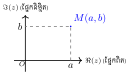
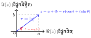
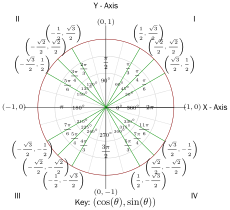

មេរៀន ចំនួនកុំផ្លិច
១. ទម្រង់ពីជគណិត (Algebraic Form)

ទម្រង់ពីជគណិត៖ \(\displaystyle z=a+bi\) ដែល \(\displaystyle a,b\in \mathbb{R}\)
- \(\displaystyle a\) ផ្នែកពិត (Real part)
- \(\displaystyle b\) ផ្នែកនិម្មិត (Imaginary part)
- ឯកតានិម្មិត៖ \(\displaystyle {{i}^{2}}=-1\) (\(\displaystyle i=\sqrt{-1}\))
- ស្វ័យគុណនៃ \(\displaystyle i\) : \(\displaystyle i^{4k}=1\), \(\displaystyle i^{4k+r}=i^r\)
- ចំនួននិមិត្ត៖ \(\displaystyle \sqrt{-C}=\sqrt{C}i\)
- ចំនួនកុំផ្លិចឆ្លាស់៖ \(\displaystyle \bar{z}=a-bi\)
- បើ \(\displaystyle X+Yi=a+bi \Leftrightarrow \begin{cases} X=a\\ Y=b \end{cases}\)
- បើ \(\displaystyle z {=} a + bi\) ជាចំនួនពិត \(\displaystyle \Leftrightarrow b {=} 0\)
- បើ \(\displaystyle z {=} a {+} bi\) ជាចំនួននិមិត្ត \(\displaystyle \Leftrightarrow a {=} 0\)
២. ប្រមាណវិធីលើទម្រង់ពីជគណិត
បើ \(\displaystyle {{z}_{1}}=a+bi\) និង \(\displaystyle {{z}_{2}}=c+di\)៖
- វិធីបូក/ដក៖ \(\displaystyle {{z}_{1}}\pm {{z}_{2}}=(a\pm c)+(b\pm d)i\)
- វិធីគុណ៖ \(\displaystyle {{z}_{1}}\cdot {{z}_{2}}=(ac-bd)+(ad+bc)i\)
- វិធីចែក៖ \(\displaystyle \frac{{{z}_{1}}}{{{z}_{2}}}=\frac{{{z}_{1}}\cdot {{{\bar{z}}}_{2}}}{{{z}_{2}}\cdot {{{\bar{z}}}_{2}}}=\frac{(a+bi)(c-di)}{{{c}^{2}}+{{d}^{2}}}\)
៣. សមីការដឺក្រេទី២ (Quadratic Equations)
មានរាងទូទៅ \(\displaystyle az^2 + bz + c = 0\) (ដែល \(\displaystyle a\ne 0\) និង \(\displaystyle a, b, c \in \mathbb{R}\))។ គណនាឌីសគ្រីមីណង់ \(\displaystyle \Delta = b^2 - 4ac\)៖
បើ \(\displaystyle \Delta < 0\): មានឫសជាចំនួនកុំផ្លិចឆ្លាស់គ្នាពីរគឺ៖
\[z_1 = \frac{-b - i\sqrt{|\Delta|}}{2a}, \quad z_2 = \frac{-b + i\sqrt{|\Delta|}}{2a}\]
៤. ទម្រង់ត្រីកោណមាត្រ

- ម៉ូឌុល ៖ \(\displaystyle r=|z|=\sqrt{{{a}^{2}}+{{b}^{2}}}\) ដែល \(\displaystyle r>0\)
- អាគុយម៉ង់ \(\displaystyle \theta\)៖ រកតាម \(\displaystyle \cos \theta{=}\frac{a}{r}\) និង \(\displaystyle \sin \theta {=}\frac{b}{r}\)
- ទម្រង់ត្រីកោណមាត្រ៖ \(\displaystyle z=r(\cos \theta +i\sin \theta )\)
| សញ្ញារបស់ \(\displaystyle (a, b)\) | ទីតាំងកាដ្រង់ | រកមុំរហ័ស (\(\displaystyle \theta\)) |
| \(\displaystyle (+, +)\) | កាដ្រង់ទី I | \(\displaystyle \theta = \alpha\) |
| \(\displaystyle (-, +)\) | កាដ្រង់ទី II | \(\displaystyle \theta = \pi - \alpha\) |
| \(\displaystyle (-, -)\) | កាដ្រង់ទី III | \(\displaystyle \theta = \pi + \alpha\) |
| \(\displaystyle (+, -)\) | កាដ្រង់ទី IV | \(\displaystyle \theta = -\alpha\) |
ករណីពិសេស (ភ្នែកទិព្វ)
\[\begin{aligned}
z &= a \quad (a > 0) \implies \theta = 0 \\
z &= -a \quad (a > 0) \implies \theta = \pi \\
z &= bi \quad (b > 0) \implies \theta = \frac{\pi}{2} \\
z &= -bi \quad (b > 0) \implies \theta = -\frac{\pi}{2}
\end{aligned}\]
៥. លក្ខណៈម៉ូឌុល
- \(\displaystyle |z| {=} |\bar{z}| {=}|-z|\)
- \(\displaystyle |z^n| = |z|^n\)
- \(\displaystyle \left| \frac{z_1}{z_2} \right| {=} \frac{|z_1|}{|z_2|}\)
- \(\displaystyle |z|^2=z\cdot \bar{z}\)
- \(\displaystyle |z_1 \cdot z_2| = |z_1| \cdot |z_2|\)
- \(\displaystyle |z_1 + z_2| \le |z_1| + |z_2|\)
៦. លក្ខណៈអាគុយម៉ង់
- \(\displaystyle \arg(z_1 \cdot z_2) = \arg(z_1) + \arg(z_2) + 2k\pi\)
- \(\displaystyle \arg\left(\frac{z_1}{z_2}\right) = \arg(z_1) - \arg(z_2) + 2k\pi\)
- \(\displaystyle \arg(z^n) = n \cdot \arg(z) + 2k\pi\)
- \(\displaystyle \arg(\bar{z}) = -\arg(z) + 2k\pi\)
៧. ប្រមាណវិធីលើទម្រង់ត្រីកោណមាត្រ
បើ \(\displaystyle {{z}_{1}}{=}{{r}_{1}}(\cos {{\theta }_{1}}{+}i\sin {{\theta }_{1}})\) ; \(\displaystyle {{z}_{2}}{=}{{r}_{2}}(\cos {{\theta }_{2}}{+}i\sin {{\theta }_{2}})\)
- \(\displaystyle {{z}_{1}}\cdot {{z}_{2}}={{r}_{1}}{{r}_{2}}[\cos ({{\theta }_{1}}+{{\theta }_{2}})+i\sin ({{\theta }_{1}}+{{\theta }_{2}})]\)
- \(\displaystyle \frac{{{z}_{1}}}{{{z}_{2}}}=\frac{{{r}_{1}}}{{{r}_{2}}}[\cos ({{\theta }_{1}}-{{\theta }_{2}})+i\sin ({{\theta }_{1}}-{{\theta }_{2}})]\)
៨. រូបមន្តសំខាន់ៗបំផុត (ត្រូវតែចាំ)
- រូបមន្តដឺម័រ \(\displaystyle {{z}^{n}}={{r}^{n}}(\cos n\theta +i\sin n\theta )\)
- រូបមន្តអឺល័រ: \(\displaystyle {{e}^{i\theta }}=\cos \theta +i\sin \theta\)
ឫសទី \(\displaystyle n\) នៃចំនួនកុំផ្លិច (n-th Roots):
\[{{w}_{k}}=\sqrt[n]{r}\left[ \cos \left( \frac{\theta +2k\pi }{n} \right)+i\sin \left( \frac{\theta +2k\pi }{n} \right) \right]\]ដោយ \(\displaystyle k=0,1,2,...,n-1\)
៨. រូបមន្តត្រីកោណមាត្រសំខាន់ៗ
- \(\displaystyle 1{+}\cos \theta {=} 2\cos^2\frac{\theta}{2}\) `; \(\displaystyle 1{-}\cos \theta {=} 2\sin^2\frac{\theta}{2}\)
- \(\displaystyle \sin 2\theta {=} 2\sin \theta \cos \theta\)
- \(\displaystyle \sin \theta {=} 2\sin \frac{\theta}{2} \cos \frac{\theta}{2}\)
- \(\displaystyle \sin k\pi =0\)
និង \(\displaystyle \cos k\pi =\begin{cases} 1\quad k~:\text{គូ}\\ -1\quad k~:\text{សេស} \end{cases}\) - \(\displaystyle \sin (2k\pi {+}\theta){=}\sin \theta\)
- \(\displaystyle \cos (2k\pi {+}\theta) {=}\cos \theta\)
- \(\displaystyle \cos x{=}\cos a\) នោះ \(\displaystyle x=\pm a+2k\pi\)
- \(\displaystyle \sin x{=}\sin a\) នោះ\(\displaystyle \left[ \begin{array}{l} x{=}a+2k\pi \\ x{=}\pi -a+2k\pi \\ \end{array} \right.\)
រង្វង់ត្រីកោណមាត្រ
